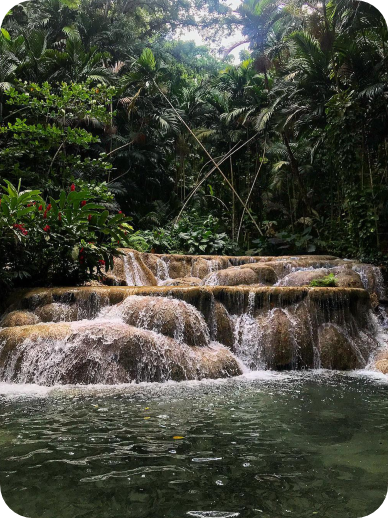

At. Ann, You Can't Miss It
St. Ann is called the garden parish of Jamaica for a reason. Its landscape varies from enthralling beaches, beach resorts and villas to stunning waterfalls, tropical rainforest beauty and of course, the omnipresent backdrop of imposing mountains. Just about any kind of ecotourist, beach, thrill-seeking or cultural tourism can be had in St. Ann, Jamaica's largest parish.
HOTELS
Similar to the plethora of things to do is the vast number of resorts and hotels in Montego Bay. You'll find an assortment of beachfront properties, all-inclusive resorts that cater to both families and adults, villas for large groups, and apartments and boutique hotels for the astute traveler. Stay in the center of the action close to the energetic “Hip Strip,” which is Gloucester Avenue where the coast lies just on the other side of businesses that line the avenue, or browse any of the more relaxed options in the hills above the city and the outskirts of the town. Choosing to stay at a hotel in Montego Bay is ideal for those wanting to tour several major attraction sites in opposite directions. It's smackdab in the middle of Ocho Rios, Negril, and St. Elizabeth, which makes it perfect for those planning day trips to see and do it all.
RESTURANTS
The Ocho Rios restaurants you ultimately choose to dine at really come down to what cuisine you're in the mood for. If your travel bucket list includes indulging in our island's famous jerk dishes, some of the best local spots to taste the authentic meal are rustic-chic Scotchies Jerk Centre and Lyming at Walkerswood rest stop just before the miles-long green canopy of Fern Gully. Further excite your taste buds with internationally styled culinary selections. Treat your palate at Stush in the Bush's organic farm-to-table experience in the mountains; EXempty Seasfood at Lobster Dave sample a taste of France at L'Escargot or tour Italy at Evita; and try fusion cuisine at Usain Bolt's Tracks and Records that'll take your appetite "to di world".
ACTIVITIES
You're on island time the moment you set foot in Jamaica. Ocho Rios, a port of call for many cruise lines, also boasts some of the most luxe resorts and spas in the Caribbean. Despite the common phrase that you shouldn't chase waterfall in Jamaica, St. Ann that is specfically what you should do. From the Amzing Dunn's River Falls to the Majesctic Seven Falls of Turtle River Park ... these falls a just worth it. And once you've had your stresses melted away in the island sun, you can head out for a night of dancing and reggae music.
WHAT TO DO IN ST. ANN

Sight seeing the Grren Grotto Caves. Named for the green algae which once covered their walls, the Green Grotto Caves
in Discovery Bay blend ecotourism and history into a 45-minute tour. These caves, secret passages and caverns have
played a pivotal role in Jamaica's history - first used by Jamaica's earliest inhabitants the Tainos for hundreds of
years as a home, source of food and sacred ground, by the Spanish and later runaway slaves as a hideaway, by
smugglers running arms to Cuba between the two World Wars then in more recent times as a rum barrel storehouse.
Visit the Seville Heritage Park in Saint Ann's Bay marks one of the first encounters between Old and New World.
Unless you're Jamaican or took Caribbean history classes, you're likely hearing for the first time that
English-speaking Jamaica was first colonized by the Spanish hence the town Sevilla la Nueva was named for Seville,
Spain. Christopher Columbus first set foot in Jamaica in 1494 making an already well-known inhabited island first
known to Europe. In 1503-4 he lived at the well-developed Taino town of Maima for over a year with his men after
getting shipwrecked. However, it wasn't until 1509 that Sevilla la Nueva was established becoming the first
permanent European settlement in Jamaica and changing Jamaican, European and World History forever.
Puerto Seco is a white sand beach located along Jamaica's north coast in the historic town of Discovery Bay,
St. Ann. Christopher Columbus is believed to have first landed in Jamaica on this beach with his three ships Santa
Maria, Pinta and Niña in 1494. For this same reason, a park named after him lies just five minutes drive away.
Recently leased and refurbished by the Guardsman Group security company, Puerto Seco is one of Jamaica's most iconic
beaches and was renovated to highlight that historic charm.
Dunn's River Falls and Park
Dunn's River Falls and Park is a state-run tourist attraction featuring a naturally-occuring cascade which flows out to the Caribbean Sea along Jamaica's north coast. It has been minimally modified with cement to create footholds, making it safer and easier for tourists to climb but that's about it. If the tiers seem too perfect to believe they're natural, that's because Jamaica's limestone richness and our abundant rivers create magic when they meet, carving out thousands of caves and dozens of perfectly tiered cascades throughout the whole island which are a sight to behold. They didn't name Jamaica from the Arawakan word meaning "land of wood and water" for nothing.
Turtle River Falls and Park

Turtle River Park is a cool oasis in the busy heart of resort town Ocho Rios. This small park is perfect for a picnic, stroll or jog, for reading, watching the fish and turtles in the stream which runs through the grounds and for entertaining bored children on its playground in the heat of the day. With fish, turtles, a coi fish pond/river, water falls and playground but minus the formidable 11-foot tall Redemption Song sculptures symbolizing our freedom. Once you find yourself in Ocho Rios and want a beautiful well-tended green space in which to relax, consider checking out Turtle River Park.
Browse other parishes >
Westmoreland
Kingston
Montego Bay
Copyright ©2022 All rights reserved | Made by Tahirah Earle